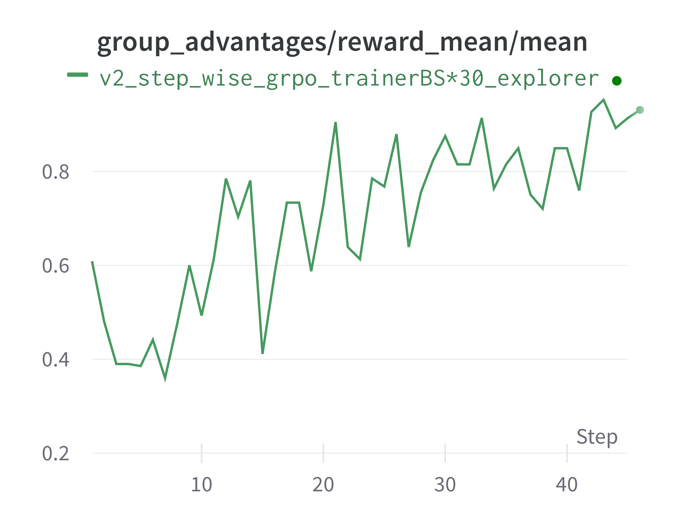

通用多轮 RFT#
在 Trinity-RFT 中，我们支持通用的多步 RFT，可用于通过与环境进行多轮交互来训练 Agent。
与 多轮 RFT 将交互结果拼接为单个 Experience 不同，该方法将每一步视为独立的 Experience，从而使 Agent 能够处理更长的上下文。
接下来我们将以 ALFWorld 为例说明通用多步工作流。如需动手实践，可直接跳转至 代码实现。
构建通用的多步工作流#
基本概念#
在 Trinity 中，我们提供了两种通用的多步工作流类型：StepWiseRewardWorkflow 和 RewardPropagationWorkflow。这些工作流设定了每一步的基本结构，并在每次运行时返回一个 experiences 列表。它们的区别在于：StepWiseRewardWorkflow 为每一步单独计算奖励，而 RewardPropagationWorkflow 在所有步骤结束后计算奖励，并将奖励反向传播到之前的步骤。更多细节请参见 trinity/common/workflows/step_wise_workflow.py。
要构建一个新的工作流，你主要需要定义 step() 中的每一步交互逻辑，以及 reward() 中的奖励函数。例如，ALFWorld 工作流的核心代码如下所示：
class StepWiseAlfworldWorkflow(RewardPropagationWorkflow):
...
def step(self, step_num: int) -> bool:
if self.done:
return False
# 为模型格式化观测结果
format_obs = format_observation(self.observation) # type: ignore
self.memory.append({"role": "user", "content": format_obs})
# 从模型获取动作
responses = self.model.chat(self.memory)
response_text = responses[0].response_text
self.memory.append({"role": "assistant", "content": response_text})
action = parse_action(response_text)
# 在环境中执行动作
observation, reward, done, info = self.env.step(action)
# 更新内部状态
self.observation = observation
self.done = done
if self.done:
self.final_reward = reward
# 如果 episode 结束则返回 False 以停止运行
return not self.done
def reward(self, exps: list[Experience]) -> float:
return self.final_reward
同时，请记得在 trinity/common/workflows/__init__.py 中的 default_mapping 中注册你的工作流：
WORKFLOWS = Registry(
"workflows",
default_mapping={
"step_wise_alfworld_workflow": "trinity.common.workflows.step_wise_workflow.StepWiseAlfworldWorkflow",
},
)
其他配置#
在通用多步场景中，每次运行可能会生成不同数量的 experience。为了适应这种情况，我们提供了一些灵活的设计。
algorithm.algorithm_type = multi_step_grpo：该算法允许每次运行包含多个步骤并生成多条 experience 数据用于训练，并将最后一步 experience 的 advantages 值广播到之前的 experience 中。buffer.train_batch_size：从 buffer 中采样用于训练的 experience 数量，可以与每次探索生成的 experience 数量不同。buffer.trainer_input.experience_buffer.replay_buffer：使用PriorityQueue可使模型优先使用高优先级的 experience （默认为使用更新产生的 experience）。synchronizer.sync_style = dynamic_by_explorer：由 explorer 决定何时与 trainer 同步模型权重。
示例配置如下所示：
project: "ALFWORLD"
name: "Step_Wise_Alfworld"
checkpoint_root_dir: ${oc.env:TRINITY_CHECKPOINT_ROOT_DIR,./checkpoints}
algorithm:
algorithm_type: multi_step_grpo
repeat_times: 16
optimizer:
lr: 5e-6
model:
model_path: ${oc.env:TRINITY_MODEL_PATH,Qwen/Qwen2.5-7B-Instruct}
max_response_tokens: 16384
max_model_len: 20480
cluster:
node_num: 1
gpu_per_node: 8
buffer:
total_epochs: 20
batch_size: 16
train_batch_size: 7680 # here: batch_size * repeat_times * max_env_steps
explorer_input:
taskset:
name: alfworld
storage_type: file
path: 'examples/grpo_alfworld/alfworld_data' # PATH TO ALFWORLD DATA
format:
prompt_key: 'game_file'
rollout_args:
temperature: 1.0
logprobs: 0
workflow_args:
max_env_steps: 30
enable_progress_bar: false
default_workflow_type: 'step_wise_alfworld_workflow'
trainer_input:
experience_buffer:
name: alfworld_buffer
storage_type: queue
replay_buffer:
enable: true
explorer:
max_repeat_times_per_runner: 1
runner_per_model: 16
max_timeout: 3600
rollout_model:
enable_history: true
engine_num: 2
tensor_parallel_size: 2
enable_prefix_caching: false
enforce_eager: false
dtype: bfloat16
seed: 42
gpu_memory_utilization: 0.7
enable_chunked_prefill: true
env_vars:
TMPDIR: ${oc.env:TMPDIR,/tmp}
synchronizer:
sync_style: dynamic_by_explorer
sync_method: 'nccl'
sync_interval: 2
sync_timeout: 3600
trainer:
save_interval: 50
grad_clip: 1.0
use_dynamic_bsz: true
max_token_len_per_gpu: 16384
ulysses_sequence_parallel_size: 1
下面，我们提供运行 ALFWorld 任务的命令。
示例：多步 ALFWorld#
环境准备#
要安装 ALFWorld 环境，可按照以下说明操作。
使用 pip 安装：
pip install alfworld[full]设置路径：
export ALFWORLD_DATA=/path/to/alfworld/data下载环境数据：
alfworld-download
现在你可以在 $ALFWORLD_DATA 目录下找到环境数据，并继续后续步骤。
更多细节可参考原始 仓库。
数据准备#
我们的数据集遵循 Huggingface datasets 库的格式，因此需要相应地转换环境数据集。
只需检查数据准备脚本并运行以下命令：
python examples/grpo_alfworld/get_alfworld_data.py
任务被描述为一个环境而非单条提示。任务描述即为 game_file 文件路径。
配置准备并运行实验#
默认配置文件是 alfworld.yaml。
你可以根据需要修改配置并运行实验！
trinity run --config examples/grpo_alfworld_general_multi_step/alfworld.yaml
结果如下图所示。

请注意，我们使用了一个基于 SFT 微调过的 Qwen2.5-3B 模型作为起点，以确保模型对环境具备基本的理解能力。